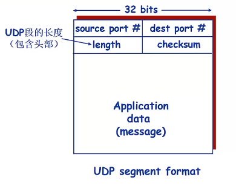
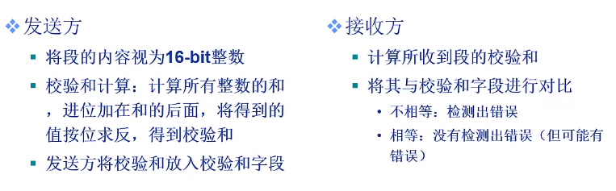
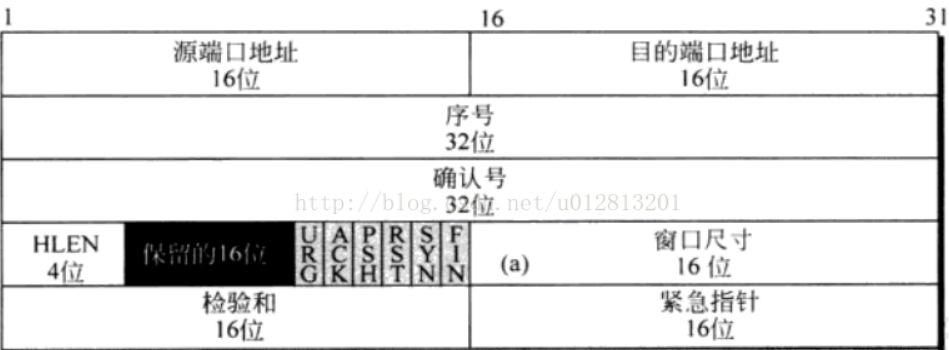
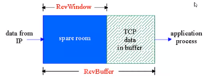
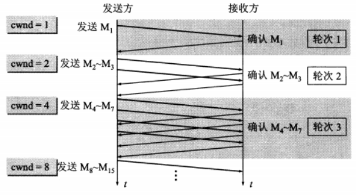
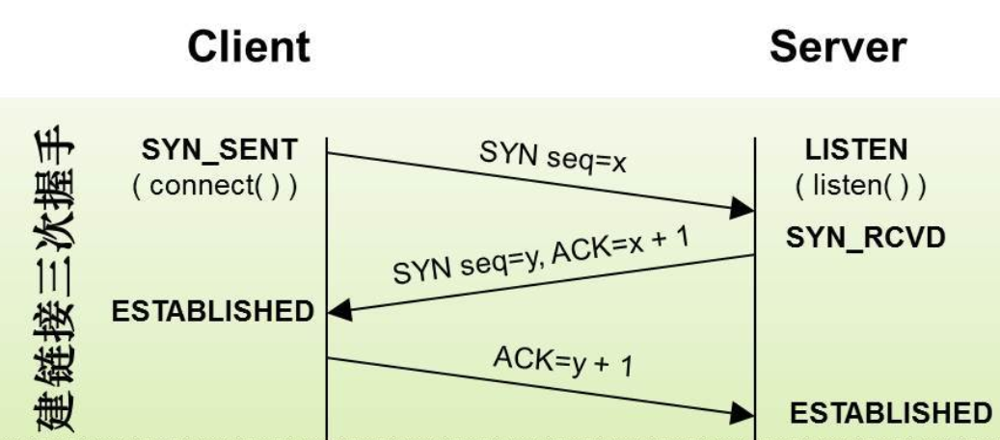
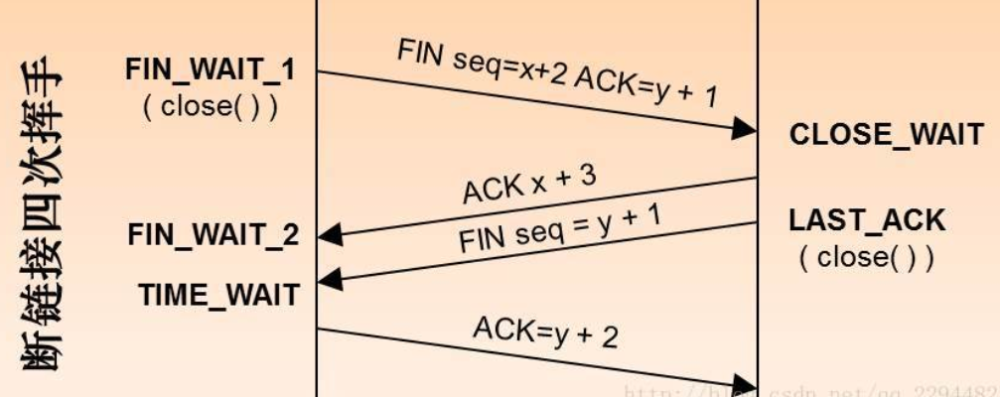

运输层概念
运输层是位于应用层和网络层之间，为运行在不同主机上的应用进程提供直接的通信服务起着至关重要的作用，主要要理解的就是我们常用的UDP和TCP协议。通常我们知道的TCP它是一个可靠的传输连接，而UDP是一个不可靠的传输连接。
无连接运输：UDP
UDP做的事
它是基于Internet IP协议，做了（传输层都要做的功能）复用 / 分用，简单的错误检测。它是无连接的，UDP发送方和接收方之间不需要握手，每个UDP段的处理独立于其他段，并且UDP段可能丢失，非按序到达。
UDP为什么存在
因为无需要建立连接（减少延迟），实现简单，无需维护连接状态，头部开销少，没有拥塞控制，应用可以更好的控制发送时间和速率。用于DNS，SNMP等。
如何在UDP上实现可靠数据传输
在应用层增加可靠性机制，应用特定的错误恢复机制。（在应用层保证数据传输可靠）添加seq/ack机制，确保数据发送到对端，添加发送和接收缓冲区，主要是用户超时重传，添加超时重传机制
详细说明：发送端发送数据时，生成一个随机seq=x，然后每一片按照数据大小分配seq。数据到达接收端后接收端放入缓存，并发送一个ack=x的包，表示对方已经收到了数据。发送端收到了ack包后，删除缓冲区对应的数据。时间到后，定时任务检查是否需要重传数据。
UDP的数据格式和校验和

 
可靠的数据传输原理
什么叫可靠？
数据不错，不丢，不乱。可靠数据传输对应用层，传输层，链路层都很重要。信道的不可靠性决定可靠数据传输协议（rdt）的复杂性。
可靠的数据传输协议
基本结构
是通过接口来实现的。调用一些 rdt_send()，rdt_rcv() ，deliver_data()这些函数接口。
可靠信道上的可靠数据传输和产生位错误的信道上的可靠数据传输
首先底层信道完全可靠（不会发生错误，不会丢弃分组），发送放和接收方的FSM（有限状态自动机）独立。
在会产生错误的信道传输会利用校验和来检测位错误，发送ACK（接收方显示的告知发送发分组已经正确的接收）或者NAK（错误的接收）当发现错误的时候会利用重传机制重传分组。
从可靠数据传输流水线可靠数据传输
Rdt2.1：如何解决重复分组问题：给每个分组增加序列号，接收方丢弃重复分组。应对ACK/NAK破坏或者被损坏的情况。
Rdt2.2：无NAK消息协议，与Rdt2.1功能相同，但是只使用ACK。如何实现？接收方通过ACK告知最后一个被正确接收的分组，在ACK消息中显示的加入被确认分组的序列号。发送发收到重复的ACK之后，采取和收到NAK的动作一样。
Rdt3.0：如果信道既可能发生错误也可能丢失分组，那么校验和+序列号+ACK+重传就不够用了（比方说ACK消息丢失了，发送方就一直在等待）解决方法也很简单：给发送方设置一个合理的时间，如果没有收到ACK就重传。但是这个合理的时间是很难确定的。那么就是需要设置定时器。Rdt3.0能够正常工作，但是性能很差。主要是由于停等协议导致的。
基于Rdt3.0，可以不使用停等协议，允许发送方发送多个分组而无需等待确认，只要最后能收获到ACK确认的技术就是流水线。可因此也需要增加一些内容：
允许发送发在收到ACK之前连续发送多个分组，需要更大的序列号范围；发送方和接收方需要更大存储空间以缓存分组；出现错误时候的处理：滑动窗口协议（主要是回退N步和选择重传）
滑动窗口协议
1比特滑动窗口协议（停等协议）
当发送窗口和接收窗口的大小固定为1时，滑动窗口协议退化为停等协议。该协议规定发送方每发送一帧后就要停下来，等待接收方已正确接收的确认（ACK）返回后才能继续发送下一帧。由于接收方需要判断接收到的帧是新发的帧还是重新发送的帧，因此发送方要为每一个帧加一个序号。由于停等协议规定只有一帧完全发送成功后才能发送新的帧，因而只用一比特来编号就够了，具有累计确认机制。
回退N帧协议
发送窗口大于1，接收窗口大于1， 由于停等协议要为每一个帧进行确认后才继续发送下一帧，大大降低了信道利用率，因此又提出了后退n协议。后退n协议中，发送方在发完一个数据帧后，不停下来等待应答帧，而是连续发送若干个数据帧，即使在连续发送过程中收到了接收方发来的应答帧，也可以继续发送。且发送方在每发送完一个数据帧时都要设置超时定时器。只要在所设置的超时时间内仍收到确认帧，就要重发相应的数据帧。如：当发送方发送了N个帧后，若发现该N帧的前一个帧在计时器超时后仍未返回其确认信息，则该帧被判为出错或丢失，此时发送方就不得不重新发送出错帧及其后的N帧。
选择重传协议
发送窗口大于1，接收窗口大于1。在后退n协议中，接收方若发现错误帧就不再接收后续的帧，即使是正确到达的帧，这显然是一种浪费。另一种效率更高的策略是当接收方发现某帧出错后，其后继续送来的正确的帧虽然不能立即递交给接收方的高层，但接收方仍可收下来，存放在接收缓冲区中，同时要求发送方重新传送出错的那一帧。一旦收到重新传来的帧后，就可以原已存于缓冲区中的其余帧一并按正确的顺序递交高层。这种方法称为选择重发(SELECTICE REPEAT)。显然，选择重发减少了浪费，但要求接收方有足够大的缓冲区空间。
有连接运输：TCP
TCP特点
它是一个点到点的通信机制，只能有一个发送方和一个接收方；它提供是一个可靠的，按序的字节流机制；使用流水线机制，通过拥塞控制和流量控制的机制设置窗口尺寸；发送方和接收方都有缓存；它是一个全双工，能双向传输数据的面向连接的通信，通信双方必须在发送数据之前建立连接，连接状态只能在连接的两端维护，不能在沿途的结点维护状态。
TCP报文段结构

源地址端口，目的端口地址
序号：TCP传输保证连接性，发送的每个字节都要编上号
确认号：接收方期望从对方接受的字节编号。如果报文段的接收方成功的接受了对方发过来的编号x的字节，那么返回x+1作为确认号，确认号可以和数据捎带一起发送）
控制：定义了6中不同的控制位或者标志位：URG:紧急数据标志位，ACK：确认标志位，PSH：请求推送位，接收端应尽快把数据传送给应用层，RST：连接复位，通常，如果TCP收到的一个分段明显不属于该主机的任何一个连接，则向远程发送一个复位包，SYN：建立连接，让连接双方同步序列号，FIN：释放连接
检验和：TCP的使用检验和是强制性的,UDP使用检验和是可选的。在计算检验和是报文段要附加相同的伪首部，对于TCP来说伪首部的协议字段的值是6
TCP实现可靠数据传输
TCP在IP层提供的不可靠服务基础上实现的可靠数据传输，使用流水线机制，累积确认机制，单一的重传计时器。触发重传的事件：超时，收到重复的ACK。
快速重传机制
TCP实现中，如果发生超时时间，超时时间间隔会重新设置，即将超时时间间隔加倍，导致其很大，重发丢失分组的时间会等待很久的时间。可以通过重复ACK检测检测分组丢失，Sender收到同一个数据的3个ACK，则假定该数据之后的段已经丢失，即在定时器超时之前进行重传。
TCP流量控制
接收方为TCP连接分配buffer

如果上层应用处理buffer中的数据较慢，发送方在这个机制下发送方不会传输的太多太快以至于淹没接收方（buffer溢出）实现的时候就是Received在Segment的头部字段中将RcvWindow告诉Sender，Sender限制自己发送的但还没收到ACK的数据不超过接收方的空闲RECWindow的尺寸。但是如果Received告知Sender RcvWindow=0是，发送方仍然可以发送一个很少的数据段，从而更新RcvWindow的值
TCP拥塞控制
首先，拥塞控制和流量控制是不一样的。拥塞控制是防止过多的数据注入到网络中，可以使网络中的路由器或链路不致过载，是一个全局性的过程。流量控制是点对点通信量的控制，是一个端到端的问题，主要就是抑制发送端发送数据的速率，以便接收端来得及接收。
拥塞的标志：重传计时器超时，接收到三个重复确认。
发送方维持一个叫做拥塞窗口的状态变量。拥塞窗口的大小取决于网络的拥塞程度，且动态地在变化，我们使用TCP拥塞控制算法，该算法包括：慢开始和拥塞避免以及快速恢复。
慢启动和拥塞避免
慢开始算法的思路就是，不要一开始就发送大量的数据，先探测一下网络的拥塞程度，也就是说由小到大（指数的增长）逐渐增加拥塞窗口的大小。拥塞避免则是让拥塞窗口缓慢地增大，即每经过一个往返时间RTT就把发送方的拥塞控制窗口加一

为了防止拥塞窗口增长过大引起网络拥塞，设置一个慢开始门限（ssthresh状态变量）
当拥塞窗口＜ssthresh，使用慢开始算法（指数增长）
当拥塞窗口 = ssthresh，既可使用慢开始算法，也可以使用拥塞避免算法（线性增长）
当拥塞窗口＞ssthresh，使用拥塞避免算法
但是无论是在慢开始阶段还是在拥塞避免阶段，只要发送方判断网络出现拥塞（其根据就是没有收到确认，虽然没有收到确认可能是其他原因的分组丢失，但是因为无法判定，所以都当做拥塞来处理），就把慢开始门限设置为出现拥塞时的发送窗口大小的一半。然后把拥塞窗口设置为1，执行慢开始算法。
快速恢复与快速重传配合使用
采用快速恢复算法时，慢开始只在TCP连接建立时和网络出现超时时才使用。
当发送方连续收到三个重复确认时，就执行“乘法减小”算法，把ssthresh门限减半。但是接下去并不执行慢开始算法。
考虑到如果网络出现拥塞的话就不会收到好几个重复的确认，所以发送方现在认为网络可能没有出现拥塞。所以此时不执行慢开始算法，而是将cwnd设置为ssthresh的大小，然后执行拥塞避免算法。
TCP连接管理
TCP的三次握手

建立连接。客户端发送连接请求报文段，将SYN位置为1，Sequence Number为x（随机数）；
服务器收到SYN报文段。服务器收到客户端的SYN报文段，需要对这个SYN报文段进行确认，设置ACK为x+1(Sequence Number+1)；同时，自己自己还要发送SYN请求信息，将SYN位置为1，Sequence Number为y；
客户端收到服务器的SYN+ACK报文段。然后将ACK设置为y+1，向服务器发送ACK报文段，
为什么需要三次握手？为了防止已失效的连接请求报文段突然又传送到了服务端，因而产生错误。也就是保证第二次的握手客户端是知道连接已经建立。
为什么不是四次握手？因为完全可靠的通信协议是根本不存在的，我们任何的通信协议都是在接受这样的现实情况之上进行的。 而三次握手后，客户端和服务端至少可以确认之前的通信情况，但无法确认之后的情况。
TCP的四次挥手

为什需要四次挥手？
TCP协议是一种面向连接的、可靠的、基于字节流的运输层通信协议。TCP是全双工模式，这就意味着，当主机1发出FIN报文段时，只是表示主机1已经没有数据要发送了，主机1告诉主机2，它的数据已经全部发送完毕了；但是，这个时候主机1还是可以接受来自主机2的数据；当主机2返回ACK报文段时，表示它已经知道主机1没有数据发送了，但是主机2还是可以发送数据到主机1的；当主机2也发送了FIN报文段时，这个时候就表示主机2也没有数据要发送了，就会告诉主机1，我也没有数据要发送了，之后彼此就会愉快的中断这次TCP连接。
为什么TCP采用随机初始序列号
在TCP的三次握手中，后采用随机产生的初始化序列号进行请求，这样做主要是出于网络安全的因素着想。如果不是随机产生初始序列号，黑客将会以很容易的方式获取到你与其他主机之间通信的初始化序列号，并且伪造序列号进行攻击，这已经成为一种很常见的网络攻击手段。
客户端和服务器最多能发送和接收多少TCP连接数？
对于服务器，每一个TCP连接都要占一个文件描述符，一旦这个文件描述符使用完了，就会返回错误。我们知道操作系统上端口号1024以下是系统保留的，从1024-65535是用户使用的。由于每个TCP连接都要占一个端口号，所以我们最多可以有60000多个并发连接？但是事实并不是这样。
我们还知道对于TCP连接是由：原IP，原端口，目的IP，目的端口。但是监听server端TCP连接4元组中只有remote ip（也就是client ip）和remote port（客户端port）是可变的，因为它是固定在本地的端口上去监听，所以最大TCP连接为：客户端ip数×客户端port数.
而对于客户端，网络通信过程中服务端监听一个固定的端口,客户端主动发起连接请求后要经过三次握手才能与服务器建立起一个TCP连接.客户端每次发起一个TCP连接时,系统会随机选取一个空闲的端口,该端口是独占的不能与其他TCP连接共享,因此理论上一台机器有多少空闲的端口,就能对外发起多少个TCP连接。根据TCP/IP协议,端口port使用16位无符号整数unsigned short来存储,因此本地端口一共有2^16=65536个,即0-65535,其中0~1023是预留端口,0有特殊含义不能使用,1024以下端口都是超级管理员用户(如root)才可以使用,因此就算使用root权限,一台机器最多能使用的端口也只有65535个。但是一台机器最多只能利用28232个端口.
TCP粘包
TCP粘包是指发送方发送的若干包数据到接收方接收时粘成一包，从接收缓冲区看，后一包数据的头紧接着前一包数据的尾。出现粘包现象的原因是多方面的，它既可能由发送方造成，也可能由接收方造成。
什么是保护消息边界和流?
保护消息边界，就是指传输协议把数据当作一条独立的消息在网上传输，接收端只能接收独立的消息。也就是说存在保护消息边界，接收端一次只能接收发送端发出的一个数据包。而面向流则是指无保护消息保护边界的，如果发送端连续发送数据，接收端有可能在一次接收动作中，会接收两个或者更多的数据包。
例如，我们连续发送三个数据包，大小分别是2k，4k ，8k,这三个数据包，都已经到达了接收端的网络堆栈中，如果使用UDP协议，不管我们使用多大的接收缓冲区去接收数据，我们必须有三次接收动作，才能够把所有的数据包接收完.而使用TCP协议，我们只要把接收的缓冲区大小设置在14k以上，我们就能够一次把所有的数据包接收下来，只需要有一次接收动作。
因此这就是因为UDP协议的保护消息边界使得每一个消息都是独立的。而流传输却把数据当作一串数据流，他不认为数据是一个一个的消息。所以有很多人在使用tcp协议通讯的时候，并不清楚tcp是基于流的传输，当连续发送数据的时候，他们时常会认识tcp会丢包。其实不然，因为当他们使用的缓冲区足够大时，他们有可能会一次接收到两个甚至更多的数据包，而往往只解析检查了第一个数据包。
粘包出现原因
简单得说，在流传输中出现，UDP不会出现粘包，因为它有消息边界(参考Window网络编程)
- 发送端需要等缓冲区满才发送出去，造成粘包
- 接收方不及时接收缓冲区的包，造成多个包接收
什么时候需要考虑粘包问题
如果利用tcp每次发送数据，就与对方建立连接，然后双方发送完一段数据后，就关闭连接，这样就不会出现粘包问题。
如果发送数据无结构，如文件传输，这样发送方只管发送，接收方只管接收存储就ok，也不用考虑粘包3如果双方建立连接，需要在连接后一段时间内发送不同结构数据，就需要考虑了。
如何避免粘包
- 对于发送方引起的粘包现象，用户可通过编程设置来避免，
TCP提供了强制数据立即传送的操作指令push，TCP软件收到该操作指令后，就立即将本段数据发送出去，而不必等待发送缓冲区满； - 对于接收方引起的粘包，则可通过优化程序设计、精简接收进程工作量、提高接收进程优先级等措施，使其及时接收数据，从而尽量避免出现粘包现象；
- 由接收方控制，将一包数据按结构字段，人为控制分多次接收，然后合并，通过这种手段来避免粘包。
网络通讯的封包和拆包
为什么基于TCP的通讯程序需要进行封包和拆包
TCP是个”流”协议，所谓流，就是没有界限的一串数据，大家可以想想河里的流水，是连成一片的，其间是没有分界线的。但一般通讯程序开发是需要定义一个个相互独立的数据包的，比如用于登陆的数据包，用于注销的数据包。由于TCP”流”的特性以及网络状况，在进行数据传输时会出现以下几种情况。
假设我们连续调用两次send分别发送两段数据data1和data2,在接收端有以下几种接收情况(当然不止这几种情况,这里只列出了有代表性的情况).
- 先接收到data1,然后接收到data2.
- 先接收到data1的部分数据,然后接收到data1余下的部分以及data2的全部.
- 先接收到了data1的全部数据和data2的部分数据,然后接收到了data2的余下的数据.
- 一次性接收到了data1和data2的全部数据.
对于A这种情况正是我们需要的,不再做讨论.对于B,C,D的情况就是大家经常说的”粘包”,就需要我们把接收到的数据进行拆包，拆成一个个独立的数据包，为了拆包就必须在发送端进行封包。
另：对于UDP来说就不存在拆包的问题,因为UDP是个”数据包”协议,也就是两段数据间是有界限的，在接收端要么接收不到数据要么就是接收一个完整的一段数据，不会少接收也不会多接收。
为什么会出现B.C.D的情况
- 由Nagle算法造成的发送端的粘包:Nagle算法是一种改善网络传输效率的算法.简单的说,当我们提交一段数据给TCP发送时,TCP并不立刻发送此段数据,而是等待一小段时间,看看在等待期间是否还有要发送的数据,若有则会一次把这两段数据发送出去.这是对Nagle算法一个简单的解释,详细的请看相关书籍. C和D的情况就有可能是Nagle算法造成的.
- 接收端接收不及时造成的接收端粘包:TCP会把接收到的数据存在自己的缓冲区中,然后通知应用层取数据.当应用层由于某些原因不能及时的把TCP的数据取出来,就会造成TCP缓冲区中存放了几段数据.
封包
封包就是给一段数据加上包头,这样一来数据包就分为包头和包体两部分内容了(以后讲过滤非法包时封包会加入”包尾”内容)。包头其实上是个大小固定的结构体，其中有个结构体成员变量表示包体的长度，这是个很重要的变量，其他的结构体成员可根据需要自己定义。根据包头长度固定以及包头中含有包体长度的变量就能正确的拆分出一个完整的数据包。
拆包
对于拆包目前我最常用的是以下两种方式：
- 动态缓冲区暂存方式。之所以说缓冲区是动态的是因为当需要缓冲的数据长度超出缓冲区的长度时会增大缓冲区长度。
- 利用底层的缓冲区来进行拆包
Nagle 算法
它是用于处理小报文段（微小分组）的发送问题。可以减少网络中微小分组的数量，比如客户端需要依次向服务器发送大小为1,2,3,1,2字节的5个分组。在没有开启nagle算法的情况下，这些小分组会被依次发送（不需要等待上一个小分组的应答，因为没启动Nagle），总共发送的报文段（分组）个数为5
当开启Nagle 算法时，客户端首先发送大小为1字节的第一个分组，随后其它分组到达发送缓冲区，由于上一个分组的应答还没有收到，所以TCP会先缓存新来的这4个小分组，并将其重新分组，组成一个大小为8(2+3+1+2)字节的”较大的”小分组。当第一个小分组的应答收到后，客户端将这个8字节的分组发送。总共发送的报文段（分组）个数为2。可以看到，当传输数据存在大量交互数据时，Nagle 算法可以有效减少网络中的报文段个数。
Nagle 基本定义是任意时刻，最多只能有一个未被确认的小段。所谓“小段”，指的是小于MSS尺寸的数据块，所谓“未被确认”，是指一个数据块发送出去后，没有收到对方发送的ACK确认该数据已收到。
Nagle 算法的规则：
- 如果包长度达到
MSS，则允许发送； - 如果该包含有
FIN，则允许发送； - 设置了
TCP_NODELAY选项，则允许发送； - 未设置
TCP_CORK选项时，若所有发出去的小数据包（包长度小于MSS）均被确认，则允许发送； - 上述条件都未满足，但发生了超时（一般为200ms），则立即发送。
虽然Nagle 算法可以减少网络中小分组的个数，但是对于那些需要实时预览的通讯程序而言，客户端可能需要不断发送更新数据并得到服务器的响应，这种情况下Nagle 算法会造成客户端明显的延迟，所以需要禁用Nagle 算法。将套接字描述符设置TCP_NODELAY选项可以禁止Nagle 算法。配合Nagle 的还有延迟确认和累积确认机制这些可以再看看。
TCP和UDP的区别
TCP面向连接,UDP是无连接的，即发送数据之前不需要建立连接；TCP提供可靠的服务，UDP不保证可靠交付；UDP具有较好的实时性，工作效率比TCP高，适用于对高速传输和实时性有较高的通信或广播通信；- 每一条
TCP连接只能是点到点的;UDP支持一对一，一对多，多对一和多对多的交互通信 TCP对系统资源要求较多，UDP对系统资源要求较少。